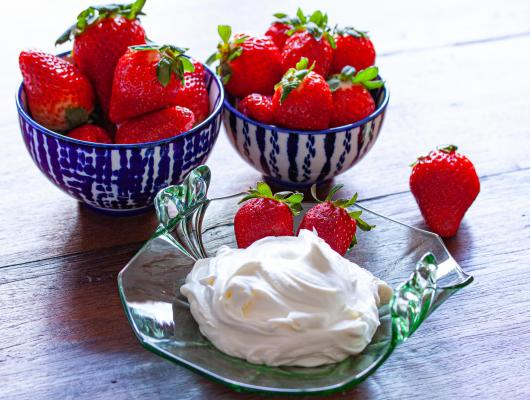

Chantilly Mascarpone
About
Combined here are my two favorite ingredients, mascarpone, and chantilly giving us a super easy, 5 minutes only, utterly delicious Chantilly Mascarpone that you can add any fruit to dessert. A dessert for all the occasions and time of day. Perfect afternoon snack for you and the little one as it has no sugar. Or evening dessert for that special someone at the end of a very romantic dinner served with a glass of champagne.
Ingridients
- 1 1/4 cups heavy whipping cream, nicely chilled
- 1 cup mascarpone
- 1 1/2 tablespoons powder sugar
- fresh fruits
Preparation
Combine heavy whipping cream and mascarpone in the bowl of a mixer and mix at slow speed for 2 minutes.
Increase the speed to medium for another 2 minutes while adding the powder sugar.
Continue on high speed until peaks formed and well blended.
Serve immediately with fresh fruits.